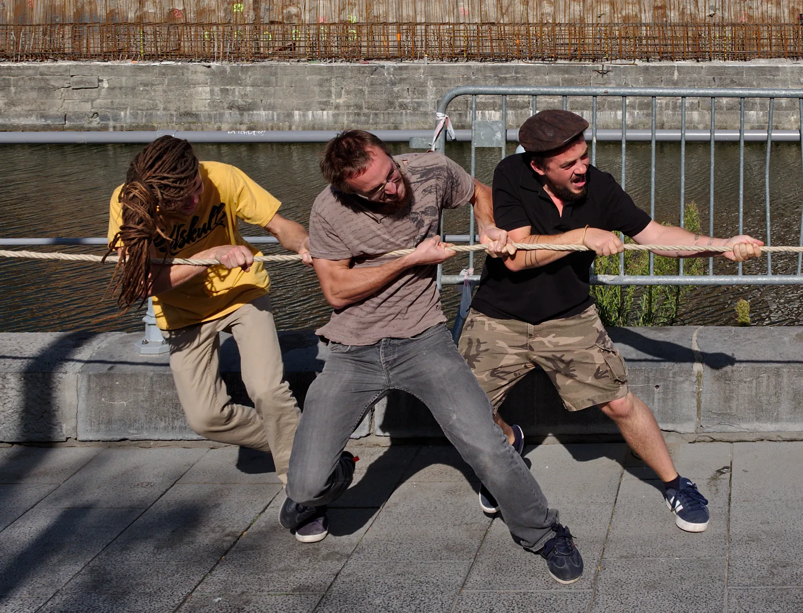

Vuorovaikutus ja voima: Newtonin ensimmäinen ja kolmas laki
Miksi curlingkivi liukuu jäällä kymmeniä metrejä, vaikka kukaan ei enää työnnä sitä?
Pohjatiedot
- Nopeus on vektori, ja tasaisessa liikkeessä se pysyy samana suuruudeltaan ja suunnaltaanluku Paikka, nopeus ja tasainen liike kuvaajina
Ydinpolku: etene vaiheiden mukaan. Ydinpolkuun kuuluvat laskujen lisäksi tutkimukset, selitykset ja kuvaajat. Valinnainen-merkityt tehtävät tarjoavat lisäharjoittelua. Valinnaisia tehtäviä 3.
Pohdinta
Curlingin heittäjä liukuu kiven kanssa muutaman metrin ja päästää sitten irti. Kivi jatkaa yksin jäätä pitkin ja pysähtyy vasta kymmenien metrien päässä maalialueelle. Harjaajat eivät koske kiveen, eikä mikään muukaan työnnä sitä irrotuksen jälkeen. Kun kivi osuu toiseen kiveen, kumpikin kivi muuttaa liikettään.
Miksi kivi jatkaa liikettä, vaikka mikään ei enää työnnä sitä, ja mitä törmäyksessä tapahtuu kummallekin kivelle?
Valinnainen Kertaa: tasainen liike
Ennusta
Tee ennusteet ennen tutkimista 2 kysymystä
Ennuste 1: liike irrotuksen jälkeen
Ennuste 2: kumpi työntää lujemmin?
Tutki
Simulaatio
Käyttöohje
Valitse Pinta ja Lähtönopeus $v_0$ ja paina Käynnistä. Käsi työntää laatikkoa $0{,}50\,\text{m}$:n matkan ja päästää irti. Ylhäällä näkyy tilanne, alhaalla vasemmalla nopeuden kuvaaja ja oikealla laatikon voimakuvio. Ajo päättyy, kun laatikko pysähtyy tai saavuttaa $12\,\text{m}$:n radan pään; lukemat $s$ ja $t$ kertovat silloin liukumatkan ja -ajan irrotuksesta. Alusta palauttaa laatikon alkuun. Nopeus hidastaa tai nopeuttaa liikettä muuttamatta lukemia.
Mallin oletukset
Arvot ovat simulaation laskemia mallin arvoja. Laatikon massa on $10\,\text{kg}$, ja sen liukukitka on vakio: matolla $40\,\text{N}$, puulattialla $20\,\text{N}$ ja jäällä $10\,\text{N}$. Kitkaton pinta on ajatuskoe, jota ei todellisuudessa ole. Ilmanvastusta ei ole. Kun laatikko on levossa, kitkaa ei vaikuta. Hyvin pieni voima piirretään vähintään lyhyenä nuolena, jotta se näkyy. Nopeuden sininen nuoli on tilannekuvassa, ei voimakuviossa, koska nopeus ei ole voima.
Laskennan selitys
Paino on $G = mg = 10\,\text{kg}\cdot 9{,}81\,\text{m/s}^2 = 98{,}1\,\text{N}$, ja lattia tukee laatikkoa yhtä suurella voimalla $N$. Työnnön aikana käden voima $F$ on niin suuri, että laatikon nopeus kasvaa tasaisesti nollasta arvoon $v_0$; esimerkiksi puulattialla ja nopeudella $3{,}0\,\text{m/s}$ se on $110\,\text{N}$. Irrotuksen jälkeen vaakasuunnassa on vain kitka, joten $\Sigma F_x = -F_\mu$, ja nopeus pienenee tasaisesti. Kitkattomalla pinnalla $\Sigma F_x = 0$, ja nopeus pysyy samana.
Käsi työntää laatikon liikkeelle ja päästää irti. Valitse pinta ja seuraa, miten nopeus ja laatikkoon vaikuttavat voimat muuttuvat irrotuksen jälkeen.
Koe 1: liukuminen eri pinnoilla
Testaa ennuste 1. Alkutila asettaa lähtönopeudeksi $v_0 = 3{,}0\,\text{m/s}$ ja pinnaksi maton. Paina Käynnistä ja odota, että ajo päättyy, ja kirjaa sitten mittaus. Toista puulattialla, jäällä ja kitkattomalla pinnalla: kirjaa kaikki neljä pintaa, koska ennuste koskee kitkatonta pintaa. Katso joka kerta voimakuviota irrotuksen jälkeen: mitkä voimat jäävät?
Alkutila: pinta: matto, lähtönopeus $v_0$ = $3\,\text{m/s}$. Vakiona: lähtönopeus $v_0$. Muutetaan: pinta.
| pinta | $s$ $(\text{m})$ | $t$ $(\text{s})$ | $v_\text{loppu}$ $(\text{m/s})$ |
|---|
Mallin kitkavoimat ovat matolla $40\,\text{N}$, puulattialla $20\,\text{N}$ ja jäällä $10\,\text{N}$.
Vertaa taulukkosi liukumatkoja: miten liukumatka muuttuu, kun kitkavoima puolittuu? Kuinka pitkälle laatikko liukuisi samalla lähtönopeudella pinnalla, jonka kitkavoima on vain $5{,}0\,\text{N}$? Vastaa metreinä.
Vihje 1: ohjaava kysymys
Kirjaa liukumatka ainakin kahdella pinnalla, joiden kitkavoimat eroavat kaksinkertaisesti, esimerkiksi puulattialla ja jäällä.
Vihje 2: mikä yhteys
Mallin arvoissa liukumatka on matolla $1{,}125\,\text{m}$, puulattialla $2{,}25\,\text{m}$ ja jäällä $4{,}5\,\text{m}$. Laske kullekin pinnalle tulo $F_\mu\cdot s$.
Vihje 3: välivaihe
Tulo on joka pinnalla $45\,\text{N}\cdot\text{m}$. Ratkaise $s$ yhtälöstä $5{,}0\,\text{N}\cdot s = 45\,\text{N}\cdot\text{m}$.
Näytä ratkaisu
Annettu
mallin arvot lähtönopeudella $v_0 = 3{,}0\,\text{m/s}$: matolla $F_\mu = 40\,\text{N}$ ja $s = 1{,}125\,\text{m}$, puulattialla $20\,\text{N}$ ja $2{,}25\,\text{m}$, jäällä $10\,\text{N}$ ja $4{,}5\,\text{m}$; uusi kitkavoima $F_\mu = 5{,}0\,\text{N}$
Kysytty
liukumatka $s$ yksikössä $\text{m}$
Periaate
Taulukosta näkyy säännönmukaisuus: kun kitkavoima puolittuu, liukumatka kaksinkertaistuu. Kitkavoiman ja liukumatkan tulo on siis sama kaikilla pinnoilla. Oletetaan, että sama sääntö pätee myös pienemmällä kitkalla.
Kaava
$F_\mu s = F_{\mu,1} s_1$, joten $s = \dfrac{F_{\mu,1} s_1}{F_\mu}$, missä $F_{\mu,1}$ ja $s_1$ ovat yhden taulukon rivin arvot
Muunnokset
Voimat ovat newtoneina ja matkat metreinä, joten muunnoksia ei tarvita.
Sijoitus
Jään rivillä
joten
Vastaus
$9{,}0\,\text{m}$
Kaksi merkitsevää numeroa kuten kitkavoimassa $5{,}0\,\text{N}$.
Järkevyys
Kitka on puolet jään kitkasta, joten matkan pitää olla kaksi kertaa jään $4{,}5\,\text{m}$, kuten se on. Kun kitka pienenee kohti nollaa, liukumatka kasvaa rajatta: kitkattomalla pinnalla laatikko ei pysähdy lainkaan, ja juuri sen sanoo Newtonin ensimmäinen laki.
Lisää tutkittavaa 2 tehtävää
Johtopäätös
Selitä mittaustesi ja voimakuvion avulla, miksi laatikko liukuu irrotuksen jälkeen, vaikka käsi ei enää työnnä sitä, ja mitä tapahtuisi, jos kitkaa ei olisi lainkaan.
Mallivastaus
Työnnön aikana käsi vaikuttaa laatikkoon, mutta voima loppuu, kun käsi irtoaa. Sen jälkeen voimakuviossa ovat vain paino, tukivoima ja kitka taaksepäin. Laatikko jatkaa liikettään, koska sillä on nopeus, ja vain kitka muuttaa sitä. Mallin arvoissa laatikko liukui matolla ($40\,\text{N}$) $1{,}125\,\text{m}$, puulattialla ($20\,\text{N}$) $2{,}25\,\text{m}$ ja jäällä ($10\,\text{N}$) $4{,}5\,\text{m}$: kun kitka puolittuu, liukumatka kaksinkertaistuu. Kitkattomalla pinnalla kokonaisvoima on nolla, ja nopeus pysyi radan pään asti $3{,}0\,\text{m/s}$:ssa. Ilman kitkaa laatikko liukuisi siis samalla nopeudella loputtomiin, kuten Newtonin ensimmäinen laki sanoo.
Arvioi oma vastauksesi
Rastita kohdat, jotka omassa vastauksessasi jo on.
Kertaa asia teoriasta ja harjoittele tehtävillä.
Kahden kärryn törmäys
Keksitty esimerkkiaineisto
Testaa ennuste 2. Kevyt kärry A ($0{,}50\,\text{kg}$) vierii radalla oikealle ja törmää paikallaan olevaan raskaaseen kärryyn B ($1{,}5\,\text{kg}$). Kummankin kärryn keulassa on voima-anturi, joka mittaa toisen kärryn siihen kohdistaman voiman sadasosasekunnin välein. Positiivinen lukema tarkoittaa voimaa oikealle. Kuvaajassa ovat kummankin anturin lukemat törmäyksen ajalta.
Teoria
Ydinajatus
Voima on vuorovaikutus
Kun kaksi kappaletta vaikuttavat toisiinsa, niiden välillä on vuorovaikutus: käsi työntää laatikkoa, naru vetää pulkkaa ja Maa vetää omenaa. Vuorovaikutuksen voimakkuutta kuvaa voima, jonka yksikkö on newton ($\text{N}$). Voima on vektori, jolla on suuruus ja suunta, ja sitä merkitään $\overline{F}$. Jokaisella voimalla on aiheuttaja, joka on aina toinen kappale. Kosketusvoimissa kappaleet koskettavat toisiaan. Maan vetovoima eli paino $\overline{G}$ ja magneettien voimat vaikuttavat myös etäältä.
Liike jatkuu ilman voimaa
Curlingin heittäjä työntää kiveä vain hetken. Kun käsi irtoaa, mikään ei enää työnnä kiveä eteenpäin, mutta kivi liukuu silti kymmeniä metrejä. Liu'un aikana kiveen vaikuttavat vain Maa ja jää (ilmanvastus on hyvin pieni). Pystysuunnassa paino ja jään tukivoima eli jään kiveä ylöspäin tukeva, pintaa vastaan kohtisuora voima kumoavat toisensa. Vaakasuunnassa on vain jään pieni kitkavoima eli pintojen välinen liikettä vastustava voima, joka osoittaa taaksepäin ja hidastaa kiveä hyvin vähitellen.
Jos kitkaa ei olisi lainkaan, kiven nopeus ei muuttuisi, ja se liukuisi samaan suuntaan loputtomiin. Tämä on Newtonin ensimmäinen laki eli jatkavuuden laki: jos kappaleeseen vaikuttavien voimien summa on nolla, kappale pysyy levossa tai liikkuu suoraviivaisesti tasaisella nopeudella. Voimaa tarvitaan liikkeen muuttamiseen, ei liikkeen ylläpitämiseen. Kappaleen taipumusta säilyttää liiketilansa sanotaan inertiaksi eli hitaudeksi.

Arkikokemus näyttää toista, koska maan päällä kitka ja ilmanvastus hidastavat lähes kaikkea, mikä liikkuu. Pyörä pysähtyy, kun polkeminen loppuu, koska tie ja ilma jarruttavat sitä, eivät siksi, että "liikkeen voima" kuluisi loppuun. Mitä pienempi kitka, sitä kauemmin liike jatkuu: jäällä pidemmälle kuin asfaltilla ja avaruudessa lähes rajatta.
Voima ja vastavoima
Kun luistelija A työntää luistelijaa B, kumpikin lähtee liukumaan poispäin toisesta. B ei vain ota työntöä vastaan, vaan se vaikuttaa samalla A:han. Vuorovaikutus on aina kaksisuuntainen. Tämä on Newtonin kolmas laki eli voiman ja vastavoiman laki: kun kappale A vaikuttaa kappaleeseen B voimalla, B vaikuttaa A:han yhtä suurella mutta vastakkaissuuntaisella voimalla. Voima ja vastavoima syntyvät samassa vuorovaikutuksessa samaan aikaan, ja ne ovat samaa lajia: työntö ja vastatyöntö, vetovoima ja vastavetovoima.
Aikuinen ja lapsi saavat toisiltaan yhtä suuren voiman, vaikka aikuinen on paljon raskaampi. Lapsi lähtee silti liikkeelle suuremmalla nopeudella, koska pienemmän massan liiketila muuttuu samasta voimasta enemmän; tähän palataan luvussa Newtonin toinen laki. Tärkeintä on, että voima ja vastavoima vaikuttavat eri kappaleisiin. Siksi ne eivät koskaan kumoa toisiaan, eikä niitä piirretä saman kappaleen voimakuvioon.
Newtonin ensimmäinen ja kolmas laki
Newtonin ensimmäinen laki on ehto kappaleeseen vaikuttavien voimien summalle:
$$\Sigma\overline{F} = \overline{0} \ \Leftrightarrow\ \overline{v} = \text{vakio}$$
missä $\Sigma\overline{F}$ on kappaleeseen vaikuttavien voimien vektorisumma eli kokonaisvoima (N) ja $\overline{v}$ kappaleen nopeus (m/s). Vakionopeus tarkoittaa, että sekä nopeuden suuruus että suunta pysyvät samoina; myös lepo $\overline{v} = \overline{0}$ on vakionopeus.
Kokonaisvoima nolla ei tarkoita, ettei voimia olisi, vaan että ne kumoavat toisensa. Suoralla tiellä tasaisella nopeudella ajavaan autoon vaikuttavat paino ja tien tukivoima pystysuunnassa sekä tien renkaisiin kohdistama voima eteenpäin ja ilmanvastus taaksepäin. Koska nopeus ei muutu, eteenpäin vievä voima on yhtä suuri kuin ilmanvastus, kun vierimisvastus jätetään huomiotta.
Newtonin kolmas laki kirjoitetaan kahden kappaleen välisille voimille:
$$\overline{F}_{AB} = -\overline{F}_{BA}$$
missä $\overline{F}_{AB}$ on voima, jolla kappale A vaikuttaa kappaleeseen B (N), ja $\overline{F}_{BA}$ voima, jolla B vaikuttaa A:han (N). Miinusmerkki kertoo, että voimat ovat vastakkaissuuntaiset; suuruudet ovat samat, $F_{AB} = F_{BA}$.
Laskuissa tarvitaan usein painon suuruutta:
- kappaleeseen vaikuttava painovoima Maan pinnalla
- $$G = mg$$
missä $G$ on paino (N), $m$ kappaleen massa (kg) ja $g = 9{,}81\,\text{m/s}^2$ putoamiskiihtyvyys. Painon vastavoima on kappaleen yhtä suuri vetovoima Maahan.
Yleinen virhekäsitys
Moni ajattelee, että liikkuvaan kappaleeseen täytyy vaikuttaa voima liikkeen suuntaan ja että liike loppuu, kun tämä voima "kuluu loppuun". Ensimmäisen lain mukaan näin ei ole: liukuvaan curlingkiveen ei vaikuta mikään eteenpäin, ja se hidastuu vain kitkan takia. Toinen yleinen virhe on luulla, että voima ja vastavoima kumoavat toisensa. Ne vaikuttavat eri kappaleisiin: hevonen vetää kärryä ja kärry hevosta, mutta kärryn liikkeen ratkaisevat vain kärryyn vaikuttavat voimat. Kolmas virhe on pitää pöydällä lepäävän kirjan painoa ja pöydän tukivoimaa voimana ja vastavoimana. Ne ovat yhtä suuret ensimmäisen lain takia. Tukivoiman vastavoima on kirjan voima pöytään ja painon vastavoima kirjan vetovoima Maahan.
Tiivistelmä
- Voima kuvaa kahden kappaleen vuorovaikutusta. Jokaisella voimalla on aiheuttaja, toinen kappale, ja voiman yksikkö on newton.
- Newtonin ensimmäinen laki: jos kokonaisvoima on nolla, kappale pysyy levossa tai liikkuu suoraviivaisesti tasaisella nopeudella.
- Voimaa tarvitaan liikkeen muuttamiseen, ei sen ylläpitämiseen. Liike hidastuu arjessa kitkan ja ilmanvastuksen takia.
- Newtonin kolmas laki: $\overline{F}_{AB} = -\overline{F}_{BA}$. Voima ja vastavoima ovat yhtä suuret, vastakkaissuuntaiset ja samaa lajia, ja ne vaikuttavat eri kappaleisiin, joten ne eivät kumoa toisiaan.
Valinnainen Palaa ennusteisiisi
Vertaa ennusteitasi kokeen ja kuvaajan tuloksiin. Mikä ajatuksistasi piti paikkansa, ja minkä muuttaisit? Palaa myös alun curlingkiveen: miksi se liukuu, ja mitä kummallekin kivelle tapahtuu törmäyksessä?
Muuttaisitko ennustettasi?
Esimerkit
Kun olet opiskellut luvun teorian, siirry ohjattuihin esimerkkeihin. Ensimmäisessä seuraat mallilaskua vaihe vaiheelta, seuraavissa teet valinnat itse, ja vihjeet auttavat, jos jäät jumiin.
Esimerkki 1: Lentokoneen voimat
Matkustajakone lentää vaakasuoraan suoraan eteenpäin tasaisella nopeudella $850\,\text{km/h}$. Kumpikin sen kahdesta suihkumoottorista työntää ilmaa ja palokaasuja taaksepäin $48\,\text{kN}$:n voimalla. Kuinka suuri on koneeseen kohdistuva ilmanvastus?
Vaihe 1/7
Tunnetut ja kysytty. Yhden moottorin voima kaasuihin $F_1 = 48\,\text{kN}$ taaksepäin, moottoreita on kaksi, ja nopeus $850\,\text{km/h}$ pysyy samana suuruudeltaan ja suunnaltaan. Kysytään ilmanvastusta $F_\text{v}$.
Vaihe 2/7
Periaate. Newtonin kolmannen lain mukaan kaasut työntävät kutakin moottoria eteenpäin yhtä suurella voimalla $F_1$; se on moottorin työntövoima. Kone lentää suoraan tasaisella nopeudella, joten Newtonin ensimmäisen lain mukaan sen kokonaisvoima on nolla. Vaakasuunnassa koneeseen vaikuttavat vain kaksi työntövoimaa $\overline{F}_1$ ja $\overline{F}_2$ eteenpäin (molemmat $48\,\text{kN}$) ja ilmanvastus $\overline{F}_\text{v}$ taaksepäin, joten ne kumoavat toisensa. Pystysuunnassa siipien nostovoima ja paino kumoavat toisensa. Voimakuviossa kone on suorakulmio ja siihen vaikuttavat voimat ovat nuolia:
Vaihe 3/7
Kaava ratkaistuna. Valitaan positiivinen suunta eteenpäin ja ratkaistaan ilmanvastus:
$$\begin{aligned} \Sigma F_x &= 2F_1 - F_\text{v} = 0 \\ F_\text{v} &= 2F_1 \end{aligned}$$
Vaihe 4/7
Yksikkömuunnokset. Nopeutta $850\,\text{km/h}$ ei tarvita: riittää tietää, että se ei muutu. Voimat ovat kilonewtoneina, joten tulos saadaan suoraan kilonewtoneina: $48\,\text{kN} = 48\,000\,\text{N}$.
Vaihe 5/7
Sijoitus. Sijoitetaan moottorin voima yksikköineen:
$$\begin{aligned} F_\text{v} &= 2F_1 \\ &= 2\cdot 48\,\text{kN} \\ &= 96\,\text{kN} \end{aligned}$$
Vaihe 6/7
Tulos. Ilmanvastus on $96\,\text{kN}$ eli $9{,}6\cdot 10^{4}\,\text{N}$ ja osoittaa taaksepäin. Moottorin voima $48\,\text{kN}$ tulkitaan tarkaksi arvoksi, joten ilmanvastus $96\,\text{kN}$ on tämän mallin tarkka arvo, eikä sitä tarvitse pyöristää.
Vaihe 7/7
Järkevyys. Jos ilmanvastus olisi työntövoimia pienempi, kokonaisvoima osoittaisi eteenpäin ja kone kiihtyisi; jos suurempi, kone hidastuisi. Tasainen nopeus on mahdollinen vain, kun ilmanvastus on yhtä suuri kuin työntövoimien summa $2\cdot 48\,\text{kN}$. Sama päättely pätee kaikilla tasaisilla nopeuksilla: työntövoiman ja ilmanvastuksen summa on aina nolla. Voimien suuruudet voivat silti olla eri nopeuksilla erilaiset, sillä ilmanvastus kasvaa nopeuden kasvaessa, joten suuremmalla tasaisella nopeudella tarvitaan myös suurempi työntövoima.
Valinnainen Esimerkki 2: Etsi virhe
Esimerkki 3: Sovella uuteen tilanteeseen
Auto vetää peräkärryä suoralla tiellä tasaisella nopeudella. Peräkärryyn vaikuttavat taaksepäin ilmanvastus $420\,\text{N}$ ja vierimisvastus $260\,\text{N}$. Kuinka suurella voimalla peräkärry vetää auton vetokoukkua? Vastaa newtoneina.
Vihje 1: ohjaava kysymys
Valitse ensin kappaleeksi peräkärry. Mitkä vaakasuorat voimat siihen vaikuttavat, ja mitä tasainen nopeus kertoo niiden summasta?
Vihje 2: mikä yhteys
Peräkärryssä vetokoukun voima eteenpäin on yhtä suuri kuin vastukset yhteensä. Kysytty voima vaikuttaa kuitenkin autoon: mikä laki yhdistää nämä kaksi voimaa?
Vihje 3: välivaihe
Newtonin kolmannen lain mukaan peräkärry vetää koukkua yhtä suurella voimalla taaksepäin kuin koukku vetää peräkärryä eteenpäin: $420\,\text{N} + 260\,\text{N}$.
Näytä ratkaisu
Annettu
peräkärryn ilmanvastus $F_\text{i} = 420\,\text{N}$ ja vierimisvastus $F_\text{r} = 260\,\text{N}$ taaksepäin, nopeus on vakio ja tie suora
Kysytty
peräkärryn voima auton vetokoukkuun $F_{\text{PA}}$ yksikössä $\text{N}$
Periaate
Peräkärry liikkuu suoraviivaisesti tasaisella nopeudella, joten Newtonin ensimmäisen lain mukaan sen kokonaisvoima on nolla: vetokoukun voima $F_{\text{AP}}$ eteenpäin on yhtä suuri kuin vastukset yhteensä. Newtonin kolmannen lain mukaan peräkärry vetää koukkua yhtä suurella voimalla taaksepäin.
Voimakuvio
Valitaan kappaleeksi peräkärry, ja se piirretään suorakulmiona. Siihen vaikuttavat vaakasuunnassa kolme voimaa: vetokoukun voima $\overline{F}_{\text{AP}}$ eteenpäin sekä ilmanvastus $\overline{F}_\text{i}$ ja vierimisvastus $\overline{F}_\text{r}$ taaksepäin. Pystysuunnassa ovat vielä paino ja tien tukivoima, jotka kumoavat toisensa. Auton voima koukkuun ei kuulu peräkärryn kuvioon, koska se vaikuttaa autoon. Positiivinen suunta on eteenpäin.
Kaava
$F_{\text{PA}} = F_{\text{AP}}$, joten $F_{\text{PA}} = F_\text{i} + F_\text{r}$
Muunnokset
Voimat ovat newtoneina, joten muunnoksia ei tarvita.
Sijoitus
Vastaus
$680\,\text{N}$
Taaksepäin, kymmenen newtonin tarkkuudella kuten annetut voimat.
Järkevyys
Jos koukku vetäisi peräkärryä heikommin kuin $680\,\text{N}$, vastukset hidastaisivat sitä, ja vahvemmin vedettynä se kiihtyisi. Tien voiman auton renkaisiin on kumottava auton oman ilmanvastuksen ja vierimisvastuksen lisäksi tämä $680\,\text{N}$, joten peräkärry lisää polttoaineen kulutusta.
Kertaa luvun käsitteet
Jos valitset Kertaa myöhemmin, kortti siirtyy kertauspakkaasi.
- Vuorovaikutus
- Kahden kappaleen välinen tapahtuma, jossa kappaleet voivat muuttaa toistensa liikettä tai muotoa.
- Voima
- Kuvaa vuorovaikutuksen voimakkuutta, ja sen yksikkö on newton.
- Newtonin ensimmäinen laki
- Kappale säilyttää liiketilansa, jos siihen vaikuttava kokonaisvoima on nolla; jatkavuuden laki.
- Inertia
- Kappaleen hitaus: ominaisuus vastustaa liiketilansa muuttumista.
- Newtonin kolmas laki
- Vuorovaikutuksessa kappaleet kohdistavat toisiinsa yhtä suuret mutta vastakkaissuuntaiset voimat.
- Voima ja vastavoima
- Kaksi yhtä suurta vastakkaissuuntaista voimaa vaikuttavat eri kappaleisiin samassa vuorovaikutuksessa.
Tehtävät
Taso 1 · perusharjoitus 8 tehtävää
Yksi kaava tai yksi päättelyaskel. Ydintehtävät ensin, loput lisäharjoitusta.
- Tehtävä 4-1
Kattolamppu roikkuu paikallaan pystysuoran johdon varassa. Lampun paino on $18\,\text{N}$. Kuinka suuri on johdon jännitysvoima lamppuun?
Vastaus
$18\,\text{N}$
Näytä ratkaisu
Annettu
lampun paino $G = 18\,\text{N}$, lamppu on paikallaan
Kysytty
johdon jännitysvoima $T$ yksikössä $\text{N}$
Periaate
Lamppu on levossa, joten Newtonin ensimmäisen lain mukaan siihen vaikuttavien voimien summa on nolla. Lamppuun vaikuttavat vain Maa ja johto.
Voimakuvio
Lamppu suorakulmiona, positiivinen suunta ylös. Paino $\overline{G}$ keskipisteestä alas ja johdon jännitysvoima $\overline{T}$ yläpinnasta ylös, yhtä pitkinä.
Kaava
$T - G = 0$, joten $T = G$
Muunnokset
Paino on newtoneina, joten muunnoksia ei tarvita.
Sijoitus
$T = G = 18\,\text{N}$
Vastaus
$18\,\text{N}$
Kaksi merkitsevää numeroa kuten painossa $18\,\text{N}$.
Järkevyys
Jos johto vetäisi vähemmän kuin $18\,\text{N}$, paino voittaisi ja lamppu lähtisi liikkeelle alaspäin; jos enemmän, se lähtisi ylöspäin. Paikallaan pysyminen vaatii täsmälleen painon suuruisen voiman. Johto vaikuttaa lamppuun ylöspäin, koska naru voi vain vetää.
- Tehtävä 4-2
Köydenvedossa köysi on paikallaan. Joukkue A vetää köyttä vasemmalle $850\,\text{N}$:n voimalla. Köyden paino jätetään huomiotta. Kuinka suurella voimalla joukkue B vetää köyttä oikealle?
Vastaus
$850\,\text{N}$
Näytä ratkaisu
Annettu
joukkueen A voima köyteen $F_A = 850\,\text{N}$ vasemmalle, köysi on paikallaan, köyden paino jätetään huomiotta
Kysytty
joukkueen B voima köyteen $F_B$ yksikössä $\text{N}$
Periaate
Köysi on levossa, joten Newtonin ensimmäisen lain mukaan siihen vaikuttavien voimien summa on nolla. Vaakasuunnassa köyteen vaikuttavat vain joukkueiden vedot.
Voimakuvio
Köysi pitkänä suorakulmiona, positiivinen suunta oikealle. Joukkueen A veto $\overline{F}_A$ köyden vasemmasta päästä vasemmalle ja joukkueen B veto $\overline{F}_B$ oikeasta päästä oikealle.
Kaava
$F_B - F_A = 0$, joten $F_B = F_A$
Muunnokset
Voima on newtoneina, joten muunnoksia ei tarvita.
Sijoitus
$F_B = F_A = 850\,\text{N}$
Vastaus
$850\,\text{N}$
Kolme merkitsevää numeroa kuten voimassa $850\,\text{N}$.
Järkevyys
Jos B vetäisi heikommin, köysi lähtisi liikkeelle vasemmalle. Köydenvedon voittaa se joukkue, joka saa maasta suuremman kitkavoiman jalkoihinsa, ei se, joka vetää köyttä lujemmin: köysi vetää kumpaakin joukkuetta yhtä suurella voimalla.
- Tehtävä 4-3
Luistelija seisoo jäällä ja työntää kaukalon laitaa käsillään $90\,\text{N}$:n voimalla. Kuinka suurella voimalla laita työntää luistelijaa?
Vastaus
$90\,\text{N}$
Näytä ratkaisu
Annettu
luistelijan voima laitaan $F_{\text{LK}} = 90\,\text{N}$ laitaa kohti
Kysytty
laidan voima luistelijaan $F_{\text{KL}}$ yksikössä $\text{N}$
Periaate
Newtonin kolmas laki: luistelija ja laita vuorovaikuttavat, joten laita vaikuttaa luistelijaan yhtä suurella mutta vastakkaissuuntaisella voimalla. Laki pätee riippumatta siitä, liikkuuko kumpikaan.
Voimakuvio
Valitaan kappaleeksi luistelija, joka piirretään suorakulmiona; positiivinen suunta on laidasta poispäin. Luistelijaan vaikuttavat paino alas, jään tukivoima ylös ja laidan voima $\overline{F}_{\text{KL}}$ luistelijasta poispäin, päättyen luistelijan kylkeen. Hänen oma voimansa laitaan $\overline{F}_{\text{LK}}$ vaikuttaa laitaan, joten se ei kuulu hänen kuvioonsa vaan on kysytyn voiman vastavoima.
Kaava
$\overline{F}_{\text{KL}} = -\overline{F}_{\text{LK}}$, joten suuruuksina $F_{\text{KL}} = F_{\text{LK}}$
Muunnokset
Voima on newtoneina, joten muunnoksia ei tarvita.
Sijoitus
$F_{\text{KL}}$$= F_{\text{LK}}$$= 90\,\text{N}$Vastaus
$90\,\text{N}$
Luistelijasta poispäin laidasta, kaksi merkitsevää numeroa kuten voimassa $90\,\text{N}$.
Järkevyys
Luistelija lähtee liukumaan poispäin laidasta, joten häneen on vaikuttanut voima laidasta poispäin. Sen aiheuttaja on laita. Laita ei liiku, koska se on kiinni jäässä ja kaukalon rakenteissa, jotka vaikuttavat siihen omilla voimillaan.
- Tehtävä 4-4Ydintehtävä
Auto ajaa suoralla tiellä tasaisella nopeudella. Tie työntää auton vetäviä renkaita eteenpäin $620\,\text{N}$:n voimalla, ja ilmanvastus autoon on $380\,\text{N}$. Lisäksi autoon vaikuttaa taaksepäin vierimisvastus.
Kuinka suuri on vierimisvastus?
Vastaus
$240\,\text{N}$
Näytä ratkaisu
Annettu
tien voima renkaisiin eteenpäin $F = 620\,\text{N}$, ilmanvastus $F_\text{i} = 380\,\text{N}$, nopeus on vakio ja tie suora
Kysytty
vierimisvastus $F_\text{r}$ yksikössä $\text{N}$
Periaate
Auto liikkuu suoraviivaisesti tasaisella nopeudella, joten Newtonin ensimmäisen lain mukaan kokonaisvoima on nolla myös liikkeen suunnassa: eteenpäin ja taaksepäin vaikuttavat voimat ovat yhtä suuret.
Voimakuvio
Auto suorakulmiona, positiivinen suunta eteenpäin. Vaakasuunnassa tien voima $\overline{F}$ eteenpäin, ilmanvastus $\overline{F}_\text{i}$ ja vierimisvastus $\overline{F}_\text{r}$ taaksepäin. Pystysuunnassa paino ja tien tukivoima kumoavat toisensa.
Kaava
$F - F_\text{i} - F_\text{r} = 0$, joten $F_\text{r} = F - F_\text{i}$
Muunnokset
Voimat ovat newtoneina, joten muunnoksia ei tarvita.
Sijoitus
$F_\text{r}$$= 620\,\text{N} - 380\,\text{N}$$= 240\,\text{N}$Vastaus
$240\,\text{N}$
Kymmenen newtonin tarkkuudella kuten annetut voimat, joten kaksi merkitsevää numeroa.
Järkevyys
Vastusten summa $380\,\text{N} + 240\,\text{N} = 620\,\text{N}$ on yhtä suuri kuin eteenpäin vievä voima, joten nopeus ei muutu. Vierimisvastus on pienempi kuin ilmanvastus, mikä sopii maantienopeuksiin, joilla ilmanvastus on autolle suurin vastus.
- Tehtävä 4-5
Kirja, jonka massa on $0{,}65\,\text{kg}$, lepää pöydällä. Maa vetää kirjaa sen painon suuruisella voimalla. Kuinka suurella voimalla kirja vetää Maata?
Vastaus
$6{,}4\,\text{N}$
Näytä ratkaisu
Annettu
kirjan massa $m = 0{,}65\,\text{kg}$, Maan voima kirjaan on kirjan paino; $g = 9{,}81\,\text{m/s}^2$
Kysytty
kirjan voima Maahan $F$ yksikössä $\text{N}$
Periaate
Maa ja kirja vetävät toisiaan. Newtonin kolmannen lain mukaan kirja vetää Maata yhtä suurella voimalla kuin Maa kirjaa, mutta vastakkaiseen suuntaan eli ylöspäin. Maan voima kirjaan on paino $G = mg$.
Voimakuvio
Valitaan kappaleeksi kirja, joka piirretään suorakulmiona; positiivinen suunta on ylös. Kirjaan vaikuttavat paino $\overline{G}$ keskipisteestä alas ja pöydän tukivoima $\overline{N}$ alapinnasta ylös. Paino on Maan voima kirjaan, ja sen vastavoima on kirjan voima $\overline{F}$ Maahan, joka vaikuttaa Maahan eikä kuulu kirjan kuvioon.
Kaava
$F = G$ ja $G = mg$, joten $F = mg$
Muunnokset
Massa on kilogrammoina, joten muunnoksia ei tarvita.
Sijoitus
$F$$= 0{,}65\,\text{kg}\cdot 9{,}81\,\text{m/s}^2$$= 6{,}3765\,\text{N}$Vastaus
$6{,}4\,\text{N}$
Ylöspäin kohti kirjaa, kaksi merkitsevää numeroa kuten massassa $0{,}65\,\text{kg}$.
Järkevyys
Kilogramman paino on noin $10\,\text{N}$, joten $0{,}65\,\text{kg}$:n kirjan paino on noin $6\,\text{N}$. Maa ei huomattavasti liiku tämän voiman vaikutuksesta, koska sen massa on valtava. Pöydän tukivoima ei ole painon vastavoima, vaan se kuuluu kirjan ja pöydän vuorovaikutukseen.
- Tehtävä 4-6Ydintehtävä
Jääkiekko liukuu suoraan tasaisella nopeudella hyvin liukkaalla jäällä. Kitka ja ilmanvastus voidaan jättää huomiotta. Mikä väite kiekkoon vaikuttavista voimista on oikein?
Vastaus
Kokonaisvoima on nolla, koska kiekon nopeus ja suunta pysyvät samoina
Näytä ratkaisu
Kysytty
mikä väite kiekkoon vaikuttavista voimista on oikein, kun kiekko liukuu tasaisella nopeudella eikä kitkaa tai ilmanvastusta ole.
Periaate
Newtonin ensimmäisen lain mukaan kappaleen nopeus pysyy samana silloin ja vain silloin, kun kokonaisvoima on nolla. Voimaa tarvitaan nopeuden muuttamiseen, ei sen ylläpitämiseen.
Mallivastaus
Kiekon nopeus ja suunta pysyvät samoina, joten kokonaisvoima on nolla. Pystysuunnassa paino ja jään tukivoima kumoavat toisensa, ja vaakasuunnassa ei vaikuta mikään voima, koska kitka ja ilmanvastus puuttuvat. Eteenpäin työntävää voimaa ei tarvita eikä sellaista ole: lyönnin voima loppui, kun maila irtosi kiekosta. Jos kokonaisvoima osoittaisi liikkeen suuntaan, kiekko kiihtyisi, ja jos taaksepäin, se hidastuisi.
- Tehtävä 4-7
Kirja lepää vaakasuoralla pöydällä. Pöytä tukee kirjaa ylöspäin suuntautuvalla voimalla. Mikä voima on tämän tukivoiman vastavoima Newtonin kolmannen lain mukaan?
Vastaus
Kirjan voima pöytään, koska tukivoima on kirjan ja pöydän välinen vuorovaikutus
Näytä ratkaisu
Kysytty
mikä voima on pöydän kirjaan kohdistaman tukivoiman vastavoima.
Periaate
Newtonin kolmannen lain mukaan vuorovaikutuksessa kumpikin osapuoli vaikuttaa toiseen yhtä suurella ja vastakkaissuuntaisella voimalla. Vastavoima vaikuttaa siis eri kappaleeseen kuin alkuperäinen voima ja on samaa lajia.
Mallivastaus
Tukivoima on pöydän voima kirjaan, joten sen vastavoima on kirjan voima pöytään: kirja painaa pöytää alaspäin. Kirjan paino ei ole vastavoima, koska se vaikuttaa samaan kappaleeseen kuin tukivoima; ne ovat yhtä suuret, koska kirja on levossa (ensimmäinen laki). Maan vetovoima kirjaan on kirjan paino ja kuuluu Maan ja kirjan vuorovaikutukseen. Pöydän paino lattiaan kuuluu pöydän ja lattian vuorovaikutukseen.
- Tehtävä 4-8
Lapsi vetää kelkkaa köydellä vaakasuoraan ja kelkka liikkuu suoraan tasaisella nopeudella. Lapsi vetää köyttä $38\,\text{N}$:n voimalla. Köyden paino jätetään huomiotta. Kuinka suurella voimalla köysi vetää lasta?
Vastaus
$38\,\text{N}$
Näytä ratkaisu
Annettu
lapsen voima köyteen $F = 38\,\text{N}$, kelkka liikkuu tasaisella nopeudella, köyden paino jätetään huomiotta
Kysytty
köyden voima lapseen $F_\text{KL}$ yksikössä $\text{N}$
Periaate
Newtonin kolmannen lain mukaan lapsi ja köysi vuorovaikuttavat, joten köysi vetää lasta yhtä suurella mutta vastakkaissuuntaisella voimalla kuin lapsi köyttä. Laki pätee, vaikka kelkka liikkuu tasaisella nopeudella. Valitaan kappaleeksi lapsi. Köyden voima $\overline{F}_\text{KL}$ osoittaa lapsesta kelkkaa kohti eli lasta vastaan, ja lapsen oma voima köyteen vaikuttaa köyteen eikä kuulu lapsen kuvioon.
Kaava
$\overline{F}_\text{KL} = -\overline{F}_\text{LK}$, joten suuruuksina $F_\text{KL} = F_\text{LK}$
Muunnokset
Voima on newtoneina, joten muunnoksia ei tarvita.
Sijoitus
$F_\text{KL}$$= F_\text{LK}$$= 38\,\text{N}$Vastaus
$38\,\text{N}$
Kelkkaa kohti, kaksi merkitsevää numeroa kuten voimassa $38\,\text{N}$.
Järkevyys
Kelkan liike ei vaikuta voimien suuruuteen: sama $38\,\text{N}$ olisi, jos kelkka seisoisi. Tasainen nopeus kertoo vain, että köyden voima kelkkaan on yhtä suuri kuin kelkkaan kohdistuva vastus, $38\,\text{N}$.
Taso 2 · soveltava harjoitus 8 tehtävää
Kaksi vaihetta, mittausaineiston käsittely, yksikkömuunnos tai kaavan ratkaiseminen. Ydintehtävät ensin, loput lisäharjoitusta.
- Tehtävä 4-9
Pöydällä on kirja, jonka paino on $8{,}0\,\text{N}$, ja sen päällä toinen kirja, jonka paino on $5{,}0\,\text{N}$. Kirjat ovat paikallaan. Kuinka suurella voimalla alempi kirja painaa pöytää?
Vastaus
$13\,\text{N}$
Näytä ratkaisu
Annettu
alemman kirjan paino $G_1 = 8{,}0\,\text{N}$, ylemmän kirjan paino $G_2 = 5{,}0\,\text{N}$, kirjat ovat paikallaan
Kysytty
alemman kirjan voima pöytään $F$ yksikössä $\text{N}$
Periaate
Ylempi kirja on levossa, joten alempi kirja tukee sitä voimalla $G_2$ (ensimmäinen laki), ja kolmannen lain mukaan ylempi kirja painaa alempaa yhtä suurella voimalla alaspäin. Alempi kirja on myös levossa, joten pöydän tukivoima siihen on yhtä suuri kuin alaspäin vaikuttavat voimat yhteensä. Lopuksi alempi kirja painaa pöytää tukivoiman suuruisella voimalla (kolmas laki).
Voimakuvio
Alempi kirja suorakulmiona, positiivinen suunta ylös. Paino $\overline{G}_1$ keskipisteestä alas, ylemmän kirjan voima $\overline{F}_2$ yläpinnasta alas ja pöydän tukivoima $\overline{N}$ alapinnasta ylös.
Kaava
$N - G_1 - F_2 = 0$ ja $F_2 = G_2$, joten $F = N = G_1 + G_2$
Muunnokset
Voimat ovat newtoneina, joten muunnoksia ei tarvita.
Sijoitus
$F$$= 8{,}0\,\text{N} + 5{,}0\,\text{N}$$= 13\,\text{N}$Vastaus
$13\,\text{N}$
Alaspäin. Summa on kymmenesosanewtonin tarkkuudella kuten painot $8{,}0\,\text{N}$ ja $5{,}0\,\text{N}$, joten siinä on kaksi merkitsevää numeroa.
Järkevyys
Pöytä kannattelee molempia kirjoja, joten sen on tuettava niiden yhteistä painoa. Ylempi kirja ei kuitenkaan koske pöytää: sen paino välittyy pöytään alemman kirjan kautta voimaparien ketjuna.
- Tehtävä 4-10
Uimari ui suoraan vaakasuunnassa tasaisella nopeudella. Hänen painonsa on $720\,\text{N}$ ja veden noste yhtä suuri. Hän työntää käsillään ja jaloillaan vettä taaksepäin keskimäärin $65\,\text{N}$:n voimalla.
Kuinka suuri on veden vastus uimariin keskimäärin?
Vastaus
$65\,\text{N}$
Näytä ratkaisu
Annettu
uimarin voima veteen $F_{\text{UV}} = 65\,\text{N}$ taaksepäin, uimarin paino $720\,\text{N}$ ja veden noste yhtä suuri, uimari ui suoraan vaakasuunnassa tasaisella nopeudella
Kysytty
veden vastus uimariin $F_\text{v}$ yksikössä $\text{N}$
Periaate
Kolmannen lain mukaan vesi työntää uimaria eteenpäin yhtä suurella voimalla $F_{\text{VU}} = 65\,\text{N}$; se vie uimaria eteenpäin. Uimari liikkuu tasaisella nopeudella, joten ensimmäisen lain mukaan vaakasuuntaisten voimien summa on nolla. Paino ja noste ovat pystysuoria eivätkä vaikuta vaakasuuntaiseen tasapainoon, joten niitä ei tarvita: veden vastus taaksepäin on yhtä suuri kuin veden työntö eteenpäin.
Voimakuvio
Uimari suorakulmiona, positiivinen suunta eteenpäin. Veden työntö $\overline{F}_{\text{VU}}$ eteenpäin ja veden vastus $\overline{F}_\text{v}$ taaksepäin. Pystysuunnassa noste ja paino kumoavat toisensa.
Kaava
$F_{\text{VU}} - F_\text{v} = 0$ ja $F_{\text{VU}} = F_{\text{UV}}$, joten $F_\text{v} = F_{\text{UV}}$
Muunnokset
Voima on newtoneina, joten muunnoksia ei tarvita.
Sijoitus
$F_\text{v}$$= F_{\text{UV}}$$= 65\,\text{N}$Vastaus
$65\,\text{N}$
Taaksepäin, kaksi merkitsevää numeroa kuten voimassa $65\,\text{N}$.
Järkevyys
Uimari pääsee eteenpäin vain siksi, että vesi työntää häntä; ilman vastavoimaa käsien vetäminen ei liikuttaisi häntä mihinkään. Jos hän työntäisi vettä lujemmin, eteenpäin vievä voima kasvaisi ja hän kiihtyisi, kunnes vastus kasvaisi yhtä suureksi.
- Tehtävä 4-11
Laskuvarjohyppääjä, jonka massa varusteineen on $85\,\text{kg}$, laskeutuu avatun varjon varassa suoraan alas tasaisella nopeudella. Kuinka suuri on ilmanvastus hyppääjään ja varjoon yhteensä?
Vastaus
$830\,\text{N}$
Näytä ratkaisu
Annettu
massa varusteineen $m = 85\,\text{kg}$, nopeus on vakio ja suoraan alas; $g = 9{,}81\,\text{m/s}^2$
Kysytty
ilmanvastus $F_\text{v}$ yksikössä $\text{N}$
Periaate
Hyppääjä laskeutuu suoraviivaisesti tasaisella nopeudella, joten Newtonin ensimmäisen lain mukaan kokonaisvoima on nolla. Häneen vaikuttavat Maa (paino alas) ja ilma (vastus ylös, liikettä vastaan).
Voimakuvio
Hyppääjä ja varjo suorakulmiona, positiivinen suunta ylös. Paino $\overline{G}$ keskipisteestä alas ja ilmanvastus $\overline{F}_\text{v}$ ylös, yhtä pitkinä. Nopeus alas piirretään erikseen, ei voimaksi.
Kaava
$F_\text{v} - G = 0$ ja $G = mg$, joten $F_\text{v} = mg$
Muunnokset
Massa on kilogrammoina, joten muunnoksia ei tarvita.
Sijoitus
$F_\text{v}$$= 85\,\text{kg}\cdot 9{,}81\,\text{m/s}^2$$= 833{,}85\,\text{N}$Vastaus
$830\,\text{N}$
Eli $8{,}3\cdot 10^{2}\,\text{N}$ ylöspäin, kaksi merkitsevää numeroa kuten massassa $85\,\text{kg}$.
Järkevyys
$85\,\text{kg}$:n paino on noin $850\,\text{N}$, ja ilmanvastus on yhtä suuri. Liike alaspäin ei vaadi alaspäin vaikuttavaa kokonaisvoimaa: hyppääjä liikkuu alas jatkavuuden takia, ja voimat ovat tasapainossa.
- Tehtävä 4-12Ydintehtävä
Hissikorin paino on $5{,}8\,\text{kN}$, ja korissa on matkustajia, joiden massa on yhteensä $320\,\text{kg}$. Hissi nousee tasaisella nopeudella. Kuinka suuri on kaapelin jännitysvoima koriin? Vastaa kilonewtoneina.
Vastaus
$8{,}9\,\text{kN}$
Näytä ratkaisu
Annettu
korin paino $G_\text{k} = 5{,}8\,\text{kN}$, matkustajien massa $m = 320\,\text{kg}$, hissi nousee tasaisella nopeudella; $g = 9{,}81\,\text{m/s}^2$
Kysytty
kaapelin jännitysvoima $T$ yksikössä $\text{kN}$
Periaate
Kori ja matkustajat liikkuvat yhdessä tasaisella nopeudella, joten ensimmäisen lain mukaan niihin vaikuttavien voimien summa on nolla. Kun kori ja matkustajat ajatellaan yhdeksi kappaleeksi, kaapeli kannattelee niiden yhteistä painoa.
Voimakuvio
Kori matkustajineen suorakulmiona, positiivinen suunta ylös. Kaapelin jännitysvoima $\overline{T}$ yläpinnasta ylös, korin paino $\overline{G}_\text{k}$ ja matkustajien paino $\overline{G}_\text{m}$ alas.
Kaava
$T - G_\text{k} - mg = 0$, joten $T = G_\text{k} + mg$
Muunnokset
$5{,}8\,\text{kN} = 5800\,\text{N}$; lopuksi newtonit muunnetaan kilonewtoneiksi jakamalla luvulla $1000$.
Sijoitus
$T$$= 5800\,\text{N} + 320\,\text{kg}\cdot 9{,}81\,\text{m/s}^2$$= 5800\,\text{N} + 3139{,}2\,\text{N}$$= 8939{,}2\,\text{N}$Vastaus
$8{,}9\,\text{kN}$
Kaksi merkitsevää numeroa kuten korin painossa $5{,}8\,\text{kN}$.
Järkevyys
Matkustajien paino on noin $3\,\text{kN}$, ja $5{,}8\,\text{kN} + 3\,\text{kN} \approx 9\,\text{kN}$. Tasaisessa nousussa jännitysvoima on täsmälleen sama kuin paikallaan seisovassa hississä, koska nopeus ei muutu.
- Tehtävä 4-13
Oppilas vetää köyttä, jonka toinen pää on kiinni seinässä. Voima-anturi A on oppilaan päässä ja voima-anturi B seinän päässä. Köysi on koko mittauksen ajan paikallaan, ja sen paino jätetään huomiotta. Taulukossa on esimerkkiaineisto antureiden lukemista.
Millä voimalla seinä vetää köyttä sillä hetkellä, kun anturi A näyttää suurimman lukemansa? Perustele vastauksesi Newtonin laeilla. Vastauslaatikkoon tulee voiman suuruus.
Köyden päiden voima-anturien lukemat (esimerkkiaineisto) $t\,(\text{s})$ $F_\text{A}\,(\text{N})$ $F_\text{B}\,(\text{N})$ 0,0 0,9 1,0 0,5 2,6 2,5 1,0 4,8 4,8 1,5 3,4 3,5 2,0 1,2 1,1 Vastaus
$4{,}8\,\text{N}$
Näytä ratkaisu
Annettu
köysi on paikallaan; taulukosta anturin A suurin lukema $F_\text{A} = 4{,}8\,\text{N}$ hetkellä $t = 1{,}0\,\text{s}$, jolloin anturi B näyttää $4{,}8\,\text{N}$
Kysytty
seinän voima köyteen $F_\text{S}$ yksikössä $\text{N}$ hetkellä, jolloin $F_\text{A}$ on suurin
Periaate
Köysi on levossa, joten ensimmäisen lain mukaan siihen vaikuttavien voimien summa on nolla: seinän voima köyteen on yhtä suuri kuin oppilaan voima köyteen. Kolmannen lain mukaan köysi vetää anturia A ja seinää yhtä suurilla voimilla kuin ne köyttä, joten antureiden lukemat ovat yhtä suuret joka hetki.
Kuvaajan lukeminen
Taulukosta luetaan rivi, jolla $F_\text{A}$ on suurin: $t = 1{,}0\,\text{s}$, $F_\text{A} = 4{,}8\,\text{N}$. Samalla rivillä $F_\text{B} = 4{,}8\,\text{N}$. Muilla riveillä lukemat eroavat enintään $0{,}1\,\text{N}$, mikä on mittauksen satunnaisvaihtelua, ei fysikaalista eroa.
Kaava
$F_\text{S} - F_\text{A} = 0$, joten $F_\text{S} = F_\text{A}$
Muunnokset
Voimat ovat newtoneina, joten muunnoksia ei tarvita.
Sijoitus
$F_\text{S}$$= F_\text{A}$$= 4{,}8\,\text{N}$Vastaus
$4{,}8\,\text{N}$
Kaksi merkitsevää numeroa kuten taulukon lukemissa.
Järkevyys
Anturien lukemat eroavat kaikilla viidellä hetkellä enintään $0{,}1\,\text{N}$, kun lukemat vaihtelevat välillä $0{,}9\,\text{N}$–$4{,}8\,\text{N}$. Erot vaihtelevat suunnaltaan, joten ne ovat satunnaista mittausvaihtelua: kevyen köyden molemmat päät vetävät yhtä suurella voimalla joka hetki.
- Tehtävä 4-14
Ilmatyynyradalla kärry liukuu lähes kitkatta suoraan. Kärryyn ei kohdistu muuta vaakasuuntaista voimaa kuin hyvin pieni ilmanvastus. Liikeanturi mittasi kärryn nopeuden. Taulukossa on esimerkkiaineisto mittauksesta.
a) Perustele Newtonin ensimmäisellä lailla, miksi kärryyn ei tarvitse vaikuttaa eteenpäin työntävää voimaa.
b) Laske nopeuden keskiarvo mittauksen ajalta ja sen avulla kärryn kulkema matka ajassa $6{,}0\,\text{s}$.
Vastauslaatikkoon tulee kohdan b) matka.
Kärryn nopeus ilmatyynyradalla (esimerkkiaineisto) $t\,(\text{s})$ $v\,(\text{m/s})$ 0,0 0,51 1,0 0,50 2,0 0,49 3,0 0,50 4,0 0,51 5,0 0,49 Vastaus
$3{,}0\,\text{m}$
Näytä ratkaisu
Annettu
taulukosta nopeudet $0{,}51$; $0{,}50$; $0{,}49$; $0{,}50$; $0{,}51$ ja $0{,}49\,\text{m/s}$, aika $\Delta t = 6{,}0\,\text{s}$
Kysytty
a) miksi eteenpäin työntävää voimaa ei tarvita; b) kärryn kulkema matka $s$ yksikössä $\text{m}$
Periaate
Newtonin ensimmäisen lain mukaan kappale liikkuu tasaisella nopeudella, kun kokonaisvoima on nolla, eikä voimaa tarvita ylläpitämään liikettä. Nopeus on kaikissa lukemissa lähes sama, joten liike on tasaista ja matka on nopeuden ja ajan tulo.
Kuvaajan lukeminen
Taulukosta nähdään, että nopeus pysyy välillä $0{,}49$–$0{,}51\,\text{m/s}$ eikä kasva tai pienene. Vaihtelu on mittauksen satunnaisvaihtelua. Nopeuden keskiarvo $v_\text{ka}$ kuvaa tasaista nopeutta.
Kaava
$v_\text{ka} = \dfrac{\Sigma v}{n}$ ja $s = v_\text{ka}\,\Delta t$
Muunnokset
Nopeus on yksikössä $\text{m/s}$ ja aika sekunteina, joten muunnoksia ei tarvita.
Sijoitus
Nopeuksien summa on $3{,}00\,\text{m/s}$ ja lukemia on $6$, joten
$v_\text{ka}$$= \dfrac{3{,}00\,\text{m/s}}{6}$$= 0{,}500\,\text{m/s}$Matka on
$s$$= 0{,}500\,\text{m/s}\cdot 6{,}0\,\text{s}$$= 3{,}0\,\text{m}$Vastaus
a) Nopeus ei muutu, joten kokonaisvoima on nolla: pieni ilmanvastus on hyvin pieni ja pystysuunnassa paino ja tukivoima kumoavat toisensa, joten eteenpäin työntävää voimaa ei tarvita. b) $3{,}0\,\text{m}$, kaksi merkitsevää numeroa kuten ajassa $6{,}0\,\text{s}$.
Järkevyys
Nopeus on noin $0{,}5\,\text{m/s}$, joten $6\,\text{s}$:ssa kuljetaan noin $3\,\text{m}$. Radan pituuden on siis oltava vähintään tämän verran.
- Tehtävä 4-15Ydintehtävä
Oppilas perustelee: "Kun nyrkki osuu seinään, seinä työntää nyrkkiä takaisin yhtä suurella voimalla. Voimat ovat vastakkaiset ja yhtä suuret, joten ne kumoavat toisensa eikä nyrkin liike muutu."
Mikä virhe oppilaan päättelyssä on?
Vastaus
Voimat vaikuttavat eri kappaleisiin, joten seinän voima hidastaa nyrkkiä
Näytä ratkaisu
Kysytty
mikä virhe oppilaan päättelyssä on.
Periaate
Newtonin kolmannen lain voima ja vastavoima ovat yhtä suuret ja vastakkaissuuntaiset, mutta ne vaikuttavat eri kappaleisiin. Kappaleen liikkeen ratkaisee vain siihen itseensä vaikuttavien voimien summa.
Mallivastaus
Oppilas ottaa huomioon kaksi voimaa, nyrkin voiman seinään ja seinän voiman nyrkkiin, mutta ne vaikuttavat eri kappaleisiin. Nyrkin voima seinään vaikuttaa seinään, joten se ei kumoa mitään nyrkkiin vaikuttavaa. Nyrkkiin vaikuttaa seinän voima, ja se on nyrkin liikettä vastaan, joten nyrkki hidastuu ja pysähtyy. Voimat ovat silti yhtä suuret, vaikka seinä ei liiku, ja ne syntyvät yhtä aikaa. Liikkeen ylläpitämiseen ei tarvita voimaa.
- Tehtävä 4-16
Esimerkkiarvot: kuorma-auto, jonka massa on $12\,\text{t}$, peruuttaa hitaasti ja törmää paikallaan olevaan henkilöautoon, jonka massa on $1{,}2\,\text{t}$.
Törmäyksen aikana kuorma-auto työntää henkilöautoa voimalla $\overline{F}_{\text{KH}}$ ja henkilöauto kuorma-autoa voimalla $\overline{F}_{\text{HK}}$.
Kuinka suuri on voima $F_{\text{HK}}$ verrattuna voimaan $F_{\text{KH}}$ törmäyksen aikana?
Vastaus
$F_{\text{HK}} = F_{\text{KH}}$
Näytä ratkaisu
Kysytty
kuinka suuri on henkilöauton voima kuorma-autoon $F_{\text{HK}}$ verrattuna kuorma-auton voimaan henkilöautoon $F_{\text{KH}}$ törmäyksen aikana, ja miksi.
Periaate
Voima kuvaa kahden kappaleen vuorovaikutusta. Törmäyksessä autot koskettavat toisiaan, joten kyse on yhdestä vuorovaikutuksesta, jonka kaksi voimaa vaikuttavat eri kappaleisiin. Newtonin kolmannen lain mukaan $\overline{F}_{\text{KH}} = -\overline{F}_{\text{HK}}$, joten voimat ovat yhtä suuret ja vastakkaissuuntaiset riippumatta autojen massoista tai siitä, kumpi liikkui.
Mallivastaus
Voimat ovat yhtä suuret, $F_{\text{HK}} = F_{\text{KH}}$, koska ne ovat saman vuorovaikutuksen voima ja vastavoima. Kuorma-auto työntää henkilöautoa taaksepäin peruutuksen suuntaan, ja henkilöauto työntää kuorma-autoa yhtä suurella voimalla vastakkaiseen suuntaan koko törmäyksen ajan. Massat $12\,\text{t}$ ja $1{,}2\,\text{t}$ eivät muuta tätä: vastaus $F_{\text{HK}} = \tfrac{1}{10}\,F_{\text{KH}}$ pitää voimaa kappaleen ominaisuutena, joka kasvaa massan mukana. Vastaus $F_{\text{HK}} = 0$ olettaa, että vain liikkuva kappale voi työntää, vaikka voima syntyy kosketuksesta eikä vaadi liikettä. Perustelu ”voimat kumoavat toisensa” on väärä, vaikka voimat ovatkin yhtä suuret: $\overline{F}_{\text{KH}}$ vaikuttaa henkilöautoon ja $\overline{F}_{\text{HK}}$ kuorma-autoon, eikä eri kappaleisiin vaikuttavia voimia lasketa yhteen. Henkilöauton liikkeen muutoksen ratkaisevat vain henkilöautoon vaikuttavat voimat. Tarkistus: jos henkilöauton voima olisi pienempi, vuorovaikutuksella olisi kaksi eri suuruista puolta, mikä on ristiriidassa kolmannen lain kanssa.
Taso 3 · haastava 5 tehtävää
Valinnaisia: soveltamista, kaksi ideaa yhdessä tai uusi tilanne, jossa päättelet itse.
- Tehtävä 4-17
Kuumailmapallo laskeutuu suoraan alas tasaisella nopeudella. Pallon, sen sisällä olevan kuuman ilman, korin ja matkustajien yhteinen paino on $4{,}62\,\text{kN}$, ja ympäröivän ilman noste on $4{,}35\,\text{kN}$.
Kuinka suuri on ilmanvastus palloon, ja mihin suuntaan se osoittaa? Vastaa suuruus kilonewtoneina ja kerro suunta sanoin; vain suuruus tarkistetaan.
Vastaus
$0{,}27\,\text{kN}$
Näytä ratkaisu
Annettu
yhteinen paino $G = 4{,}62\,\text{kN}$, noste $F_\text{n} = 4{,}35\,\text{kN}$, pallo laskeutuu suoraan alas tasaisella nopeudella
Kysytty
ilmanvastus $F_\text{v}$ yksikössä $\text{kN}$ ja sen suunta
Periaate
Pallo liikkuu tasaisella nopeudella, joten ensimmäisen lain mukaan kokonaisvoima on nolla. Ilmanvastus on liikettä vastaan, ja pallo liikkuu alas, joten vastus osoittaa ylös. Noste ei yksin riitä kumoamaan painoa, joten ilmanvastus kannattelee loput.
Voimakuvio
Pallo koreineen suorakulmiona, positiivinen suunta ylös. Paino $\overline{G}$ keskipisteestä alas, noste $\overline{F}_\text{n}$ ylös ja ilmanvastus $\overline{F}_\text{v}$ ylös. Nopeus alas erikseen, ei voimaksi.
Kaava
$F_\text{n} + F_\text{v} - G = 0$, joten $F_\text{v} = G - F_\text{n}$
Muunnokset
Kaikki voimat ovat kilonewtoneina ja vastaus pyydetään kilonewtoneina, joten muunnoksia ei tarvita.
Sijoitus
$F_\text{v}$$= 4{,}62\,\text{kN} - 4{,}35\,\text{kN}$$= 0{,}27\,\text{kN}$Vastaus
$0{,}27\,\text{kN}$
Ylöspäin. Erotuksessa on kaksi merkitsevää numeroa, koska annetut voimat ovat sadasosakilonewtonin tarkkuudella.
Järkevyys
Jos ilmanvastusta ei olisi, painon ja nosteen erotus $0{,}27\,\text{kN}$ alaspäin muuttaisi pallon liikettä ja se laskeutuisi yhä nopeammin. Tasainen laskeutuminen tarkoittaa, että ilmanvastus on kasvanut juuri tämän erotuksen suuruiseksi. Ilmanvastus osoittaa ylös, vaikka liike on alas.
- Tehtävä 4-18
Kaksi samanlaista rengasmagneettia on pujotettu pystysuoraan puutikkuun, joka seisoo pöydällä. Magneetit hylkivät toisiaan, ja ylempi leijuu paikallaan alemman yläpuolella koskematta siihen. Kummankin magneetin paino on $0{,}30\,\text{N}$, ja kitka tikkua vasten jätetään huomiotta.
Kuinka suurella voimalla pöytä tukee alempaa magneettia? Tikun voima jätetään huomiotta.
Vastaus
$0{,}60\,\text{N}$
Näytä ratkaisu
Annettu
kummankin magneetin paino $G = 0{,}30\,\text{N}$, ylempi magneetti leijuu paikallaan, kitka ja tikun voima jätetään huomiotta
Kysytty
pöydän tukivoima alempaan magneettiin $N$ yksikössä $\text{N}$
Periaate
Ylempi magneetti on levossa, joten alemman magneetin hylkimisvoima siihen on ylös ja yhtä suuri kuin sen paino (ensimmäinen laki). Kolmannen lain mukaan ylempi magneetti hylkii alempaa yhtä suurella voimalla alaspäin, vaikka magneetit eivät kosketa toisiaan. Alempi magneetti on levossa, joten pöydän tukivoima kumoaa sen painon ja tämän voiman.
Voimakuvio
Alempi magneetti suorakulmiona, positiivinen suunta ylös. Paino $\overline{G}$ keskipisteestä alas, ylemmän magneetin voima $\overline{F}_\text{m}$ yläpinnasta alas ja pöydän tukivoima $\overline{N}$ alapinnasta ylös.
Kaava
$N - G - F_\text{m} = 0$ ja $F_\text{m} = G$, joten $N = 2G$
Muunnokset
Voimat ovat newtoneina, joten muunnoksia ei tarvita.
Sijoitus
$N$$= 2\cdot 0{,}30\,\text{N}$$= 0{,}60\,\text{N}$Vastaus
$0{,}60\,\text{N}$
Kaksi merkitsevää numeroa kuten painossa $0{,}30\,\text{N}$.
Järkevyys
Pöytä kantaa molempien magneettien painon, aivan kuin ylempi magneetti lepäisi alemman päällä. Leijuva magneetti ei ole painoton: sen paino siirtyy pöytään magneettisen voimaparin kautta.
- Tehtävä 4-19
Kaksi jousivaakaa on ripustettu peräkkäin: ylempi on kiinni katossa, ja alempi roikkuu ylemmän koukussa. Alemman vaa'an koukussa roikkuu omena, jonka paino on $1{,}5\,\text{N}$. Alemman vaa'an oma paino on $0{,}40\,\text{N}$. Kaikki on paikallaan.
Mitä ylempi vaaka näyttää?
Vastaus
$1{,}9\,\text{N}$
Näytä ratkaisu
Annettu
omenan paino $G_\text{o} = 1{,}5\,\text{N}$, alemman vaa'an paino $G_\text{v} = 0{,}40\,\text{N}$, kaikki on paikallaan
Kysytty
ylemmän vaa'an lukema eli voima $F$, jolla alempi vaaka vetää ylemmän koukkua, yksikössä $\text{N}$
Periaate
Omena on levossa, joten alemman vaa'an koukku vetää sitä ylös $1{,}5\,\text{N}$:n voimalla (ensimmäinen laki), ja kolmannen lain mukaan omena vetää koukkua alas yhtä suurella voimalla. Alempi vaaka on levossa, joten ylemmän vaa'an koukun on vedettävä sitä ylös omenan voiman ja vaa'an oman painon verran. Kolmannen lain mukaan alempi vaaka vetää ylempää alas yhtä suurella voimalla, ja sen ylempi vaaka näyttää.
Voimakuvio
Alempi vaaka suorakulmiona, positiivinen suunta ylös. Ylemmän vaa'an koukun voima $\overline{F}$ yläpinnasta ylös, paino $\overline{G}_\text{v}$ keskipisteestä alas ja omenan voima $\overline{F}_\text{o}$ alapinnasta alas.
Kaava
$F - G_\text{v} - F_\text{o} = 0$ ja $F_\text{o} = G_\text{o}$, joten $F = G_\text{o} + G_\text{v}$
Muunnokset
Voimat ovat newtoneina, joten muunnoksia ei tarvita.
Sijoitus
$F$$= 1{,}5\,\text{N} + 0{,}40\,\text{N}$$= 1{,}9\,\text{N}$Vastaus
$1{,}9\,\text{N}$
Kymmenesosanewtonin tarkkuudella kuten omenan paino $1{,}5\,\text{N}$, eli kaksi merkitsevää numeroa.
Järkevyys
Alempi vaaka näyttää omenan painon $1{,}5\,\text{N}$, ja ylempi kannattelee lisäksi alempaa vaakaa, joten sen lukeman on oltava suurempi. Lukemien erotus $0{,}40\,\text{N}$ on juuri alemman vaa'an paino.
- Tehtävä 4-20
Hevonen vetää kärryä vaakasuoralla tiellä suoraan eteenpäin tasaisella nopeudella. Kärryyn vaikuttaa tien vierimisvastus $410\,\text{N}$ ja ilmanvastus $40\,\text{N}$. Hevoseen vaikuttaa ilmanvastus $30\,\text{N}$. Köyden massa jätetään huomiotta. Arvot ovat esimerkkiaineistoa.
a) Laske köyden voima kärryyn.
b) Laske voima, jolla tie työntää hevosen kavioita eteenpäin. Hevosen jalat eivät liu'u tiellä.
c) Oppilas sanoo: "Hevonen vetää kärryä ja kärry vetää hevosta yhtä lujaa taaksepäin, joten ne kumoavat toisensa eikä mikään voi liikkua." Selitä, miksi päättely on väärä ja mikä saa hevosen ja kärryn liikkeelle.
Vastauslaatikkoon tulee kohdan b) voima.
Vastaus
$480\,\text{N}$
Näytä ratkaisu
Annettu
kärryn vierimisvastus $F_\text{r} = 410\,\text{N}$, ilmanvastus kärryyn $F_\text{k} = 40\,\text{N}$, ilmanvastus hevoseen $F_\text{h} = 30\,\text{N}$, nopeus on vakio ja suoraan eteenpäin, esimerkkiaineisto
Kysytty
a) köyden voima kärryyn $T$; b) tien voima hevosen kavioihin $F_\text{t}$ yksikössä $\text{N}$; c) miksi voimat eivät kumoa toisiaan
Periaate
Sekä kärry että hevonen liikkuvat tasaisella nopeudella, joten kummankin kokonaisvoima on nolla (ensimmäinen laki). Kärrystä saadaan köyden voima. Kolmannen lain mukaan kärry vetää hevosta taaksepäin yhtä suurella voimalla $T$ kuin köysi kärryä eteenpäin, ja sitä käytetään hevosen tasapainossa. Tien voima kavioihin on ulkoinen voima, joka vie parin eteenpäin.
Voimakuvio
Piirrä kärrylle: köyden voima $\overline{T}$ eteenpäin, vierimisvastus ja ilmanvastus taaksepäin. Hevoselle: tien voima $\overline{F}_\text{t}$ eteenpäin, köyden voima $\overline{T}$ ja ilmanvastus taaksepäin. Hevosen ja kärryn voimat ovat eri kuvioissa.
Kaava
Kärry: $T - F_\text{r} - F_\text{k} = 0$, joten $T = F_\text{r} + F_\text{k}$. Hevonen: $F_\text{t} - T - F_\text{h} = 0$, joten $F_\text{t} = T + F_\text{h}$.
Muunnokset
Voimat ovat newtoneina, joten muunnoksia ei tarvita.
Sijoitus
$T$$= 410\,\text{N} + 40\,\text{N}$$= 450\,\text{N}$$F_\text{t}$$= 450\,\text{N} + 30\,\text{N}$$= 480\,\text{N}$Vastaus
a) $450\,\text{N}$ ja b) $480\,\text{N}$ eteenpäin, kaksi merkitsevää numeroa kuten annetuissa voimissa. c) Hevosen voima kärryyn ja kärryn voima hevoseen ovat yhtä suuret ja vastakkaissuuntaiset, mutta ne vaikuttavat eri kappaleisiin, joten ne eivät kumoa toisiaan. Kärryn liikkeen ratkaisevat vain kärryyn vaikuttavat voimat, ja hevosen liikkeen vain hevoseen vaikuttavat. Hevonen pääsee liikkeelle, koska tie työntää sen kavioita eteenpäin voimalla, joka on suurempi kuin kärryn voima hevoseen.
Järkevyys
Tien voima $480\,\text{N}$ on yhtä suuri kuin kaikkien vastusten summa $410\,\text{N} + 40\,\text{N} + 30\,\text{N} = 480\,\text{N}$, joten koko järjestelmä liikkuu tasaisella nopeudella. Kitka tien ja kavioiden välillä osoittaa eteenpäin, koska se vastustaa kavion liukumista taaksepäin.
- Tehtävä 4-21
Oppilas vetää kärryä vaakasuoralla pöydällä köydellä. Köyden päässä kädessä on voima-anturi, ja liikeanturi mittaa kärryn nopeuden. Köysi on koko ajan vaakasuorassa, ja sen massa jätetään huomiotta. Taulukossa on esimerkkiaineisto mittauksesta.
a) Päättele taulukosta, milloin kärryyn vaikuttavien voimien summa on nolla. Perustele ensimmäisellä lailla.
b) Määritä pöydän kitkavoima kärryyn. Nopeuden ollessa vakio kärryn liikettä vastustavat voimat ovat yhtä suuria kuin köyden voima.
c) Selitä, miksi anturin lukema on alussa suurempi kuin kitka, ja millä voimalla kärry vetää tällöin köyttä.
Vastauslaatikkoon tulee kohdan b) kitkavoima.
Kärryn nopeus ja köyden voima (esimerkkiaineisto) $t\,(\text{s})$ $v\,(\text{m/s})$ $F\,(\text{N})$ 0,0 0,00 5,1 1,0 0,31 4,6 2,0 0,55 4,3 3,0 0,69 3,6 4,0 0,70 3,4 5,0 0,71 3,5 6,0 0,70 3,3 Vastaus
$3{,}4\,\text{N}$
Näytä ratkaisu
Annettu
taulukosta nopeus ja köyden voima; hetkillä $t = 4{,}0\,\text{s}$, $5{,}0\,\text{s}$ ja $6{,}0\,\text{s}$ nopeudet $0{,}70$; $0{,}71$ ja $0{,}70\,\text{m/s}$ sekä voimat $3{,}4$; $3{,}5$ ja $3{,}3\,\text{N}$; alussa $F = 5{,}1\,\text{N}$ ja $v = 0$ (esimerkkiaineisto)
Kysytty
a) milloin kokonaisvoima on nolla; b) kitkavoima $F_\text{k}$ yksikössä $\text{N}$; c) miksi alussa $F > F_\text{k}$
Periaate
Kun kärryn nopeus on vakio, ensimmäisen lain mukaan kokonaisvoima on nolla, joten köyden voima ja kitka ovat yhtä suuret. Jos nopeus muuttuu, kokonaisvoima ei ole nolla. Kolmannen lain mukaan kärry vetää köyttä ja oppilasta yhtä suurella voimalla kuin köysi kärryä.
Kuvaajan lukeminen
Nopeus kasvaa hetkestä $t = 0$ alkaen arvosta $0$ arvoon $0{,}69\,\text{m/s}$ ja pysyy sitten hetkistä $t = 4{,}0\,\text{s}$ alkaen lähes samana, noin $0{,}70\,\text{m/s}$. Kokonaisvoima on nolla hetkistä $t = 4{,}0\,\text{s}$ alkaen. Näiden kolmen hetken anturilukemat ovat $3{,}4\,\text{N}$, $3{,}5\,\text{N}$ ja $3{,}3\,\text{N}$.
Kaava
$F_\text{k} = F_\text{ka}$ ja $F_\text{ka} = \dfrac{\Sigma F}{n}$
Muunnokset
Voimat ovat newtoneina ja nopeus yksikössä $\text{m/s}$, joten muunnoksia ei tarvita.
Sijoitus
Voimien summa on $10{,}2\,\text{N}$ ja lukemia on $3$, joten
$F_\text{k}$$= \dfrac{10{,}2\,\text{N}}{3}$$= 3{,}40\,\text{N}$Vastaus
b) $3{,}4\,\text{N}$, kaksi merkitsevää numeroa kuten anturin lukemissa. a) Kokonaisvoima on nolla siitä alkaen, kun nopeus on vakio, eli neljännestä sekunnista. c) Alussa nopeus kasvaa, joten kokonaisvoima ei ole nolla: köysi vetää kärryä eteenpäin enemmän kuin kitka vastustaa, ja alussa köysi vetää kärryä $5{,}1\,\text{N}$:n voimalla. Kolmannen lain mukaan kärry vetää köyttä ja oppilasta samalla $5{,}1\,\text{N}$:n voimalla taaksepäin, vaikka kärry kiihtyy.
Järkevyys
Voima pienenee $5{,}1\,\text{N}$:sta kohti $3{,}4\,\text{N}$:a samalla, kun kiihtyminen loppuu. Kitka $3{,}4\,\text{N}$ on pienempi kuin alun voima, joten kärry on kiihtynyt, ja yhtä suuri kuin tasaisen vauhdin voima, joten nopeus ei enää muutu.
Testaa ja arvioi
Kokeile ensin, mitä osaat ilman apua: saat jokaisesta tehtävästä palautteen ja ehdotuksen, mitä kerrata. Arvioi sen jälkeen luvun tavoitteet. Tämä ei ole koe.
1. Pohdintatehtävä
Vastaa ensin itse ja avaa vastaus vasta sitten.
- Avaruusluotain kulkee kaukana tähdistä ja planeetoista moottori sammutettuna. Tarvitaanko voimaa, jotta luotain jatkaisi matkaansa?
Vastaus
Ei tarvita. Kun luotaimeen ei vaikuta voimia, Newtonin ensimmäisen lain mukaan se jatkaa suoraviivaisesti samalla nopeudella. Moottoria tarvitaan vain, kun nopeuden suuruutta tai suuntaa halutaan muuttaa.
- Hyttynen osuu ajavan auton tuulilasiin. Kumpaan kohdistuu törmäyksessä suurempi voima, hyttyseen vai autoon?
Vastaus
Voimat ovat yhtä suuret ja vastakkaissuuntaiset, koska ne kuuluvat samaan vuorovaikutukseen (Newtonin kolmas laki). Seuraukset ovat erilaiset: kevyen hyttysen liike muuttuu rajusti, mutta raskaan auton liike ei käytännössä muutu.
2. Käsitetehtävä
3. Käsitetehtävä: Voima ja vastavoima
4. Selitystehtävä: Piirrä itse
Lamppu roikkuu paikallaan katosta pystysuoran johdon varassa. Piirrä lampun voimakuvio paperille: lamppu suorakulmiona ja jokainen voima vaikutuskohdastaan. Valinnainen jatko: kirjoita sitten kunkin voiman viereen sen vastavoima eli mikä kappale vaikuttaa mihin kappaleeseen ja mihin suuntaan.
Mallikuvio
Lamppuun vaikuttavat Maa ja johto. Maan vetovoima eli paino $\overline{G}$ osoittaa keskipisteestä alas, ja johdon jännitysvoima $\overline{T}$ osoittaa kiinnityskohdasta ylös johtoa pitkin. Lamppu on levossa, joten ensimmäisen lain mukaan voimat kumoavat toisensa ja nuolet ovat yhtä pitkät. Painon vastavoima on lampun yhtä suuri vetovoima Maahan ylöspäin, ja jännitysvoiman vastavoima on lampun voima johtoon alaspäin. Kumpikaan vastavoima ei vaikuta lamppuun, joten ne eivät kuulu sen voimakuvioon. Paino ja jännitysvoima eivät ole voima ja vastavoima, vaikka ne ovat yhtä suuret ja vastakkaissuuntaiset: ne vaikuttavat samaan kappaleeseen ja kuuluvat eri vuorovaikutuksiin.
Arvioi oma vastauksesi
Rastita kohdat, jotka omassa vastauksessasi jo on.
Kertaa asia teoriasta ja harjoittele tehtävillä.
Arvioi, mitä opit
Arvioi tehtävistä saamasi palautteen ja oman käsityksesi perusteella. Arviot tulevat mukaan luvun tehtävien palautukseen.
Valokuvat
- Tug of war - seconds from victory (DSCF9121). Trougnouf (Benoit Brummer). lähde, CC BY 4.0
- NASA's SpaceX Crew-9 Launch (NHQ202409280010). NASA/Keegan Barber. lähde, public domain (NASA)
.jpg){kind=link}